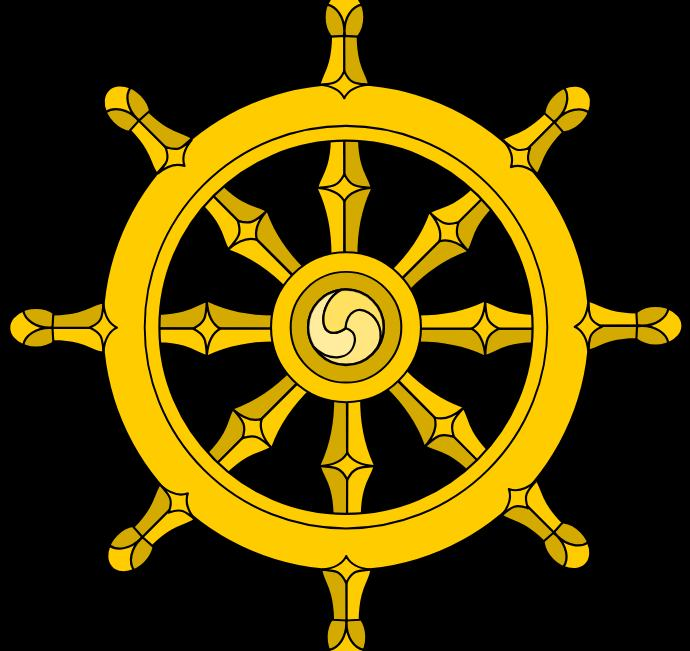

Благородный восьмеричный путь
Благородный восьмеричный путь - это путь, указанный Буддой для освобождения от страдания и достижения пробуждения.

Благородный восьмеричный путь - это путь, указанный Буддой для освобождения от страдания и достижения пробуждения. Он состоит из восьми взаимосвязанных частей. Они не являются отдельными ступенями, которые нужно пройти одну за другой. Напротив, они дополняют друг друга и вместе формируют образ жизни человека, стремящегося к мудрости и освобождению.
«Подобно путнику, который шаг за шагом проходит длинную дорогу, человек достигает мудрости не одним великим деянием, но постоянной практикой.»
Правильное воззрение
Человек должен стремиться видеть мир таким, каков он есть, понимая непостоянство всего сущего, природу страдания и закон кармы. Правильное воззрение становится основой для остальных частей пути.
Правильное намерение
Следует очищать свои намерения от злобы, жестокости и чрезмерной привязанности. Мысли человека становятся причиной его слов и поступков, поэтому путь начинается с самого ума.
Правильная речь
Не следует лгать, распространять злословие, говорить с намерением причинить вред или сеять вражду между людьми. Речь должна быть правдивой, доброй и уместной.
Правильное действие
Человек должен избегать поступков, которые причиняют вред другим живым существам. Милосердие, честность и уважение к жизни являются частью правильного действия.
Правильный образ жизни
Зарабатывая себе на жизнь, человек не должен заниматься делами, основанными на причинении вреда другим. Следует стремиться к жизни, которая не противоречит нравственным принципам Дхармы.
Правильная осознанность
Следует внимательно наблюдать за своим телом, чувствами, мыслями и состояниями ума. Осознанность позволяет человеку замечать происходящее внутри себя прежде, чем оно приведёт к необдуманным словам или поступкам.
Правильное сосредоточение
Ум человека часто подобен воде, которую тревожит ветер. Медитация помогает успокоить его, развить сосредоточенность и увидеть происходящее с большей ясностью.
Правильное усилие
Одного желания стать лучше недостаточно. Необходимо постоянно работать над своим умом: отказываться от вредных состояний, не позволять им укореняться и развивать добродетельные качества.
Мир приходит изнутри. Не ищи его снаружи.Будда Шьякмуни